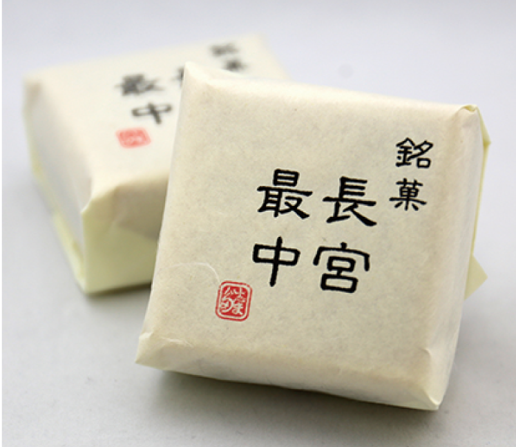

Concept志まだ菓子店について
福岡中央公園のちかく、桜通り沿い。
創業七十年になるそうです。
店に並ぶのは、手づくりのお菓子。
季節にあわせて、顔ぶれが変わります。
道路のカーブ沿いにあるので、
通り過ぎてしまうかもしれません。
近所に和菓子屋さんが
あるっていいですね。
Googleマップのクチコミより
Item看板のお菓子

-
長宮最中
ふじみ野ブランドに認定されたお菓子。餡と、この土地の名物のさつま芋が入っています。
-
ふじみん饅頭
ふじみ野市のキャラクター「ふじみん」の焼印入り。中は芋餡です。
-
くずバー
「超オススメ」というクチコミもある一本。マンゴーなど、味の顔ぶれは時期で変わります。
このほか、どら焼き・栗どら焼き・酒饅頭・柚子饅頭・茶まんじゅう・練り切りなどが並びます。
焼き団子は午後には売り切れていることが多いそうです。価格は店頭でご確認ください。
Season季節のお菓子
- 春桜餅、道明寺。桜通りの名にふさわしい季節です。
- 夏水饅頭。色がきれいだという声があります。
- 秋芋ようかん、栗どら焼き。大きな栗が丸ごと入ります。
- 通年上生菓子の練り切り。その時々の意匠でお作りしています。
季節のお菓子は入れ替わります。
お目当てがある方は、お電話でお問い合わせください。
Access店舗情報
| 店名 | 志まだ菓子店 |
|---|---|
| 住所 | 埼玉県ふじみ野市福岡中央1-4-7 福岡中央公園ちかく・桜通り沿い |
| 電話 | 049-261-0308 |
| 営業 | 8:30〜17:30ごろ ※閉店時刻は資料により差があります。 お急ぎの際はお電話でご確認ください。 |
| 定休日 | 水曜日・第3火曜日 |
| 駐車場 | 店前に2台 |
| 最寄り駅 | 東武東上線・上福岡駅から徒歩11分ほど |
ご注文・お問い合わせは、
お電話でどうぞ。